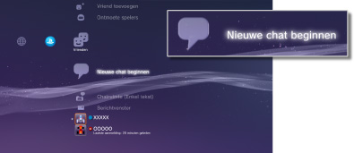
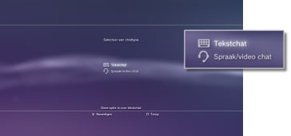
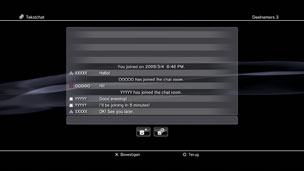

Tekstchat starten of beëindigen
Om deze functie te gebruiken, moet u mogelijk de systeemsoftware bijwerken.
U kunt een tekstchat voeren met personen op uw vriendenlijst.
Tekstchat starten
1. |
Selecteer |
|---|---|
|
 |
|
2. |
Selecteer |
|
 |
|
3. |
Voer een naam in voor de tekstchatruimte en selecteer vervolgens [Bevestigen]. |
4. |
Selecteer de vrienden die u voor de chat wilt uitnodigen en selecteer vervolgens [Bevestigen]. |
|
 |
 (Nieuwe chat beginnen).
(Nieuwe chat beginnen). (Tekstchat).
(Tekstchat).Opmerkingen
- U moet op PSNSM zijn aangemeld om tekstchat te kunnen doen.
- Er wordt geen chatuitnodigingsbericht gestuurd voor een tekstchat.
- Tot 16 personen kunnen een tekstchatruimte binnengaan.
- De tekstchatfunctie kan niet worden gebruikt als er beperkingen zijn ingesteld voor het gebruik ervan. Voor meer informatie over ouderlijk toezicht, raadpleegt u [Over het XMB™-menu] > [De functie voor ouderlijk toezicht gebruiken] in deze handleiding.
Een tekstchatruimte binnengaan
Als u wordt uitgenodigd voor een tekstchat verschijnt een melding aan de rechterbovenhoek van het scherm. Selecteer  (Chatruimte (Enkel tekst)) onder
(Chatruimte (Enkel tekst)) onder  (Vrienden) en selecteer dan de chatruimte die u wilt binnengaan.
(Vrienden) en selecteer dan de chatruimte die u wilt binnengaan.
Opmerkingen
- Als [Niet weergeven] is ingesteld in [Meldingen] onder
 (Instellingen) >
(Instellingen) >  (Systeeminstellingen), worden meldingen niet weergegeven.
(Systeeminstellingen), worden meldingen niet weergegeven. - Bij de meeste games kunt u een tekstchat voeren tijdens het gamen. Druk op de PS-toets van de draadloze controller en selecteer de chatruimte die u wilt binnengaan onder (Vrienden) > (Chatruimte (Enkel tekst)). Druk op de PS-toets om terug naar het gamescherm te gaan.
- U kunt aan maximaal drie chatruimtes tegelijk deelnemen. Als u een vierde chatruimte binnengaat, verlaat u automatisch de chatruimte die u eerst bent binnengegaan.
- Tot 20 chatruimtes kunnen worden weergegeven in (Chatruimte (Enkel tekst)). Als er meer dan 20 chatruimtes zijn, worden de oudste chatruimtes automatisch verwijderd als nieuwe chatruimtes worden geopend.
Een chatruimte verlaten
Druk op de  -toets om het tekstchatscherm te sluiten. Selecteer de chatruimte die u wilt verlaten, druk op de
-toets om het tekstchatscherm te sluiten. Selecteer de chatruimte die u wilt verlaten, druk op de  -toets en selecteer vervolgens [Verlaten] in het optiesmenu.
-toets en selecteer vervolgens [Verlaten] in het optiesmenu.
Opmerking
Als u het PS3™-systeem uitschakelt of zich afmeldt van het PSNSM verlaat u automatisch de chatruimte. Als u een chatruimte opnieuw binnengaat nadat u ze hebt verlaten, worden de chatberichten die werden verzonden tijdens uw afwezigheid niet getoond.
Een chatruimte verwijderen
Selecteer de chatruimte die u wilt verwijderen, druk op de -toets en selecteer vervolgens [Verwijderen] in het optiesmenu.
Het bedieningspaneel gebruiken
U kunt de volgende handelingen uitvoeren met het bedieningspaneel op het tekstchatscherm.
 |
Nodig een vriend uit | Nodig een vriend uit in een tekstchatruimte |
|---|---|---|
| Lijst van deelnemers | Bekijk een lijst van personen die deelnemen aan de chatruimte |